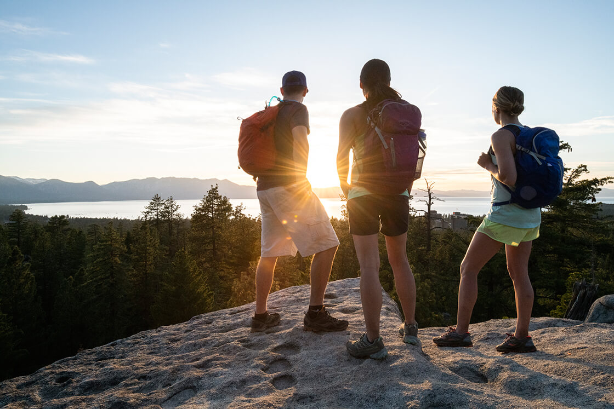

Travel
Agra

Agra is a city located in India famously known for the Taj Mahal. Agra is also known for the Agra Fort.
Photo Gallery
agra2.jpeg
Picture overlooking the Taj Mahal from city of Agra
File name: agra3.jpeg

Caption: Picture of Agra Fort known as Lal Qila.
File name: agra7.jpeg
Caption: Picture taken from Mehtab Bagh of Taj Mahal
File name: agra4.jpeg
Caption: Sunset picture overlooking Taj Mahal from city
File name: agra6.jpeg
Caption: Picture of Yamuna River taken from Taj Mahal
Lake Tahoe


Geographical Location: North America
“When it comes to things to do in South Lake Tahoe, you can shred down the mountain from 10,067 ft. at Heavenly Mountain Resort’s peak or dive into the depths of Lake Tahoe, one of the deepest lakes in North America. There’s plenty to do above and below the surface.”
“All parts of Lake Tahoe are beautiful, with unique offerings. South Lake Tahoe is popular for ski resorts like Heavenly, Sierra at Tahoe, and Kirkwood, as well as for its restaurants, shopping, casinos, and vibrant nightlife.”
Photo Gallery
File name:StatelineLakeTahoeCam.jpg

Caption:Stateline Lake Tahoe
File name:tahoe_beach_retreat_aerial.jpg

Caption:Tahoe beach retreat aerial
File name: kid.webp

Caption: Best thing to do in Lake Tahoe before summer ends
File name: Firepit_at_Zephyr_Cove_RV_Park.jpeg

Caption: Firepit at Zephyr Cove RV Park
File name: Hikers_watching_sunset.jpg
Caption: Hikers watching sunset
Guanajuato, Mexico


Geographical Location: Guanajuato, Mexico
As the sun sets, Guanajuato, known for its role in "Coco," displays vibrant colors. The golden evening sun enhances the beauty of its painted houses, reflecting the animation's spirited theme.
At twilight, Guanajuato resembles a live painting, blending reality with "Coco's" fantasy world. The colorful houses create a tranquil yet vibrant atmosphere, attracting dreamers and artists to its story-rich and culturally diverse setting.
Photo Gallery
File name: Mexico_Plaza.jpg

Caption: The Mexico Plaza bustling with activity
File name: Mexico_Chichen_Itza.jpg

Caption: Chichen Itza - the grandeur of Mayan civilization
File name: Mexcio_Teotihuacan.jpg

Caption: Teotihuacan's ancient pyramids
File name: Mexico_Guanajuato_Colourful_town.jpg

Caption: Guanajuato's vibrant streets
File name: mexico1.jpeg
Caption: Cancun beach in Mexico
Santorini, Greece

Geographical Location: Santorini, Greece
Santorini, known for its stunning sunsets and whitewashed buildings, is a gem in the Aegean Sea. The island offers breathtaking views of the caldera, a unique landscape formed by a volcanic eruption.
By night, Santorini transforms into a romantic haven. The towns of Oia and Fira, with their iconic blue domes, provide an idyllic backdrop against the twinkling lights and starry skies.
Photo Gallery
File name:greece1.jpeg
Caption: Vineyards in Santorini
File name: greece2.jpeg
Caption: Santorini's famous cliffs offering scenic views during Sunset
File name:greece3.jpeg
Caption: Stunning sunset in Santorini with pink skies and famous stairs
File name: greece4.jpeg
Caption: Blue water pool in Santorini along beach coast
File name: greece5.jpeg
Caption: Woman posing in front of blue Santorini water